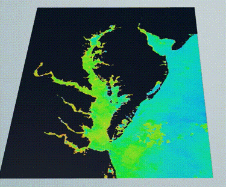
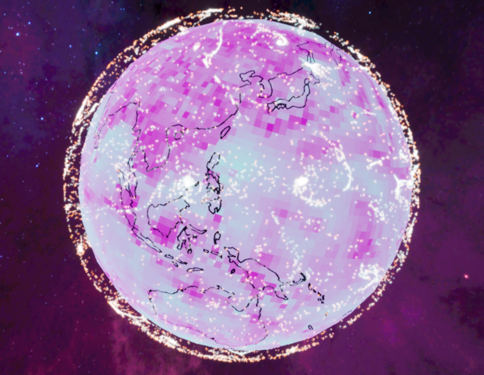
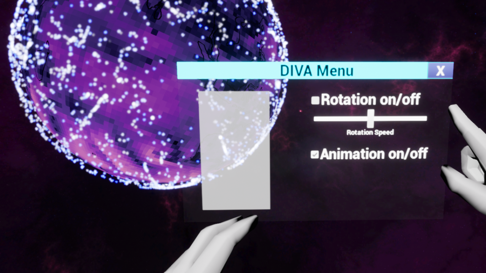
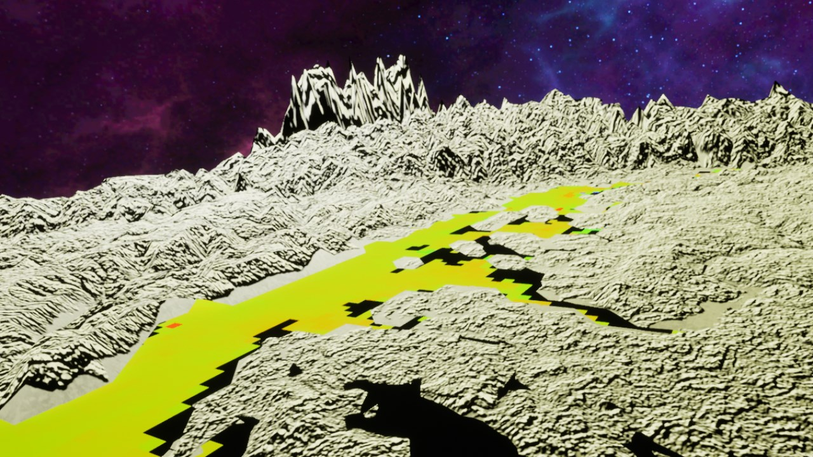

In the early stages of our project, we referenced research papers from other virtual reality and data science projects to better understand the current state of data visualization. Our preliminary research culminated in a methodology paper, which discussed the technical strategies needed to make a usable product. Then, we began working on a thesis proposal draft, which outlined our methodology as well as a set of goals for the next few years. We began exploring Unity and Unreal Engine, and ultimately decided to use Unreal for our project.
Development began in spring 2017, when we split the DIVA team into two subteams: analysis and visualization. The analysis group began testing the effectiveness of different data preprocessing methods, while the visualization group developed the framework for the environment. In addition to implementing static coastline border data, the visualization subteam was able to display a time-dependent temperature dataset. During this time, we finalized and presented our thesis proposal to an expert panel. Near the end of the semester, we also won the University Libraries Award for Outstanding Gemstone Team — see photos here.

Having established the framework for visualization in our virtual environment, we decided to focus our efforts on developing in Unreal Engine. Doing so introduced the User Interface subteam whose primary goal was to develop an interactive UI for the Oculus, using Leap Motion hardware and software. Meanwhile the visualization team was working on a case study to visualize localized high-resolution datasets — they developed a working visualization of the Chesapeake Bay during Hurricane Harvey. This work culminated in the our presentation at Junior Colloquia, for which we won second place.

The development focus shifted to finalizing a product to show off to our first focus group for feedback. All subteams are putting finishing touches on their work. For the visualization, we focused on core capabilities, added basic and interactive analysis capabilities, and developed more advanced visualization enhancement techniques. Simultaneously, we drafted our poster to present during Undergraduate Research Day.

Having succesfully visualized one variable on both a global and local scale, the the visualization subteams augmented the existing visualizations to display two variables simultaneously. The global subteam visualized wind data: the magnitude of wind speed is displayed as a perceptually uniform color texture on the globe, while wind direction is visualized using an animated particle system.

Meanwhile the local subteam visualized topographical data and mean sea surface temperature for the Chesapeake Bay in one cohesive visualization. The dataset was taken during the time period when Hurricane Harvey hit the area.

Additionally, the UI subteam developed a menu to enhance interactivity in the global visualization. The menu allows a user to control visualization parameters, such as rotation speed, to enhance interactivity.

Finally, in a focus group environment, we demonstrated the prototype to a panel of climate scientists at UMD, as well as interested students. Feedback was generally positive, but users wished to have further interactivity capabilities.
After completing our first focus group, we used their feedback to develop additional features for the prototype. Users wished to have the capability to zoom in and out of visualizations — the UI subteam implemented this in the local Chesapeake Bay visualization.

We have been finalizing our prototype and documenting the results as part of our final thesis. We will defend our thesis on April 12, 2019 at the annual Thesis Conference, before finalizing our thesis on May 1.